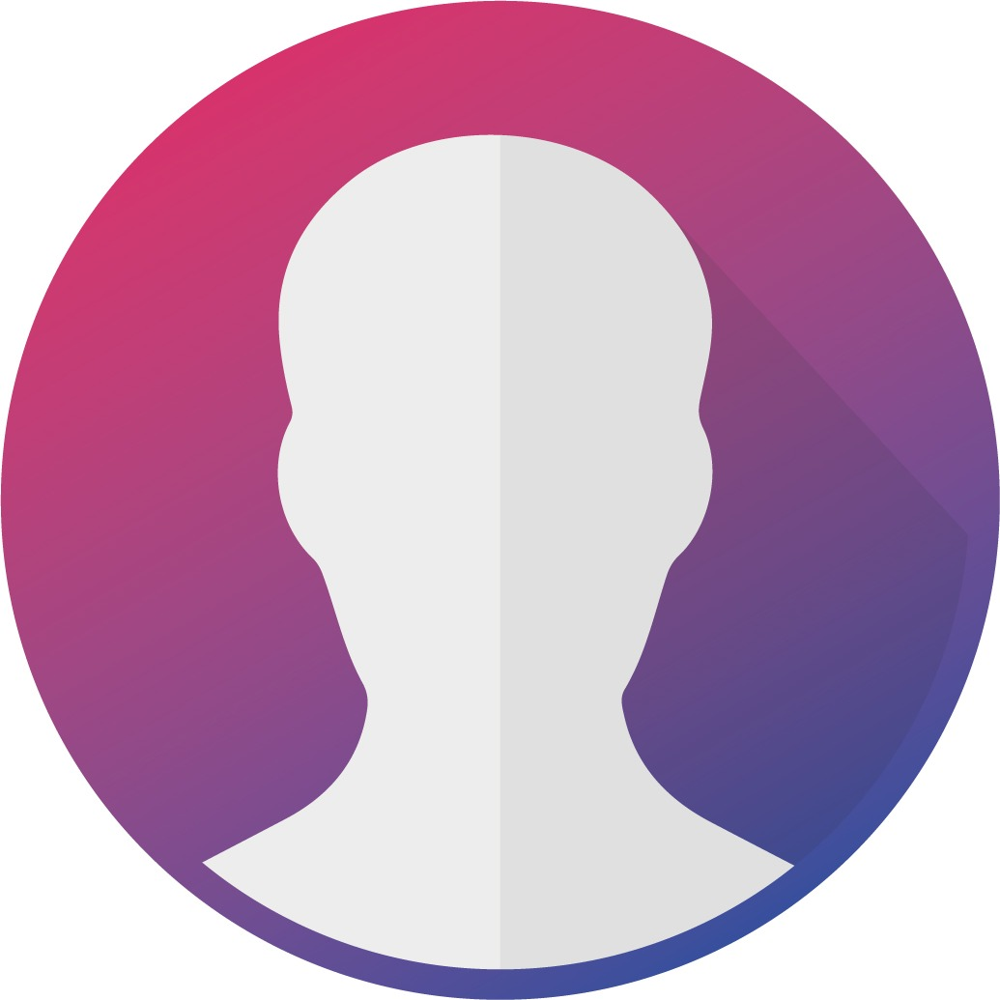

<ion-app >
  <ion-split-pane >
    <ion-menu side="start" menuId="first"  >
      <ion-content class="backgroundImage">
        <ion-list class= "listamenu" >
          <ion-avatar (click)="takePicture()">
            
          </ion-avatar>
          <ion-menu-toggle color="primary" auto-hide="true" *ngFor="let p of appPages">
            <ion-item color="primary"  [routerDirection]="'root'" [routerLink]="[p.direccion]">
              <ion-icon slot="start" src="../assets/iconos/{{p.icon}}.svg" ></ion-icon>
              <ion-label>
                {{p.title}}
              </ion-label>
            </ion-item>
          </ion-menu-toggle>
        </ion-list>
      </ion-content>
    </ion-menu>
    <ion-router-outlet main></ion-router-outlet>
  </ion-split-pane>
</ion-app>
